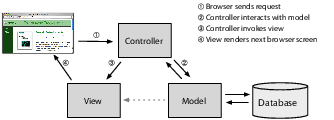
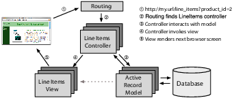

Back in 1979, Trygve Reenskaug came up with a new architecture for developing interactive applications. In his design, applications were broken into three types of components: models, views, and controllers.
The model is responsible for maintaining the state of the application. Sometimes this state is transient, lasting for just a couple of interactions with the user. Sometimes the state is permanent and will be stored outside the application, often in a database.
A model is more than just data; it enforces all the business rules that apply to that data. For example, if a discount shouldn’t be applied to orders of less than $20, the model will enforce the constraint. This makes sense; by putting the implementation of these business rules in the model, we make sure that nothing else in the application can make our data invalid. The model acts as both a gatekeeper and a data store.
The view is responsible for generating a user interface, normally based on data in the model. For example, an online store will have a list of products to be displayed on a catalog screen. This list will be accessible via the model, but it will be a view that accesses the list from the model and formats it for the end user. Although the view may present the user with various ways of inputting data, the view itself never handles incoming data. The view’s work is done once the data is displayed. There may well be many views that access the same model data, often for different purposes. In the online store, there’ll be a view that displays product information on a catalog page and another set of views used by administrators to add and edit products.
Controllers orchestrate the application. Controllers receive events from the outside world (normally user input), interact with the model, and display an appropriate view to the user.
This triumvirate—the model, view, and controller—together form an architecture known as MVC. To learn how the three concepts fit together, see Figure 4, The Model-View-Controller architecture.
|  |
|
Figure 4. The Model-View-Controller architecture |
The MVC architecture was originally intended for conventional GUI applications, where developers found the separation of concerns led to far less coupling, which in turn made the code easier to write and maintain. Each concept or action was expressed in just one well-known place. Using MVC was like constructing a skyscraper with the girders already in place—it was a lot easier to hang the rest of the pieces with a structure already there. During the development of our application, we will be making heavy use of Rails’ ability to generate scaffolding for our application.
Ruby on Rails is an MVC framework, too. Rails enforces a structure for your application—you develop models, views, and controllers as separate chunks of functionality, and it knits them all together as your program executes. One of the joys of Rails is that this knitting process is based on the use of intelligent defaults so that you typically don’t need to write any external configuration metadata to make it all work. This is an example of the Rails philosophy of favoring convention over configuration.
In a Rails application, an incoming request is first sent to a router, which works out where in the application the request should be sent and how the request itself should be parsed. Ultimately, this phase identifies a particular method (called an action in Rails parlance) somewhere in the controller code. The action might look at data in the request, it might interact with the model, and it might cause other actions to be invoked. Eventually the action prepares information for the view, which renders something to the user.
Rails handles an incoming request as shown in Figure 5, Rails and MVC. In this example, the application has previously displayed a product catalog page, and the user has just clicked the Add to Cart button next to one of the products. This button posts to http://localhost:3000/line_items?product_id=2, where line_items is a resource in our application and 2 is our internal id for the selected product.
|  |
|
Figure 5. Rails and MVC |
The routing component receives the incoming request and immediately picks it apart. The request contains a path (/line_items?product_id=2) and a method (this button does a POST operation; other common methods are GET, PUT, and DELETE). In this simple case, Rails takes the first part of the path, line_items, as the name of the controller and the product_id as the id of a product. By convention, POST methods are associated with create actions. As a result of all this analysis, the router knows it has to invoke the create method in the controller class LineItemsController (we’ll talk about naming conventions here).
The create method handles user requests. In this case, it finds the current user’s shopping cart (which is an object managed by the model). It also asks the model to find the information for product 2. It then tells the shopping cart to add that product to itself. (See how the model is being used to keep track of all the business data? The controller tells it what to do, and the model knows how to do it.)
Now that the cart includes the new product, we can show it to the user. The controller invokes the view code, but before it does, it arranges things so that the view has access to the cart object from the model. In Rails, this invocation is often implicit; again, conventions help link a particular view with a given action.
That’s all there is to an MVC web application. By following a set of conventions and partitioning your functionality appropriately, you’ll discover that your code becomes easier to work with and your application becomes easier to extend and maintain. Seems like a good trade.
If MVC is simply a question of partitioning your code a particular way, you might be wondering why you need a framework such as Ruby on Rails. The answer is straightforward: Rails handles all of the low-level housekeeping for you—all those messy details that take so long to handle by yourself—and lets you concentrate on your application’s core functionality. Let’s see how.